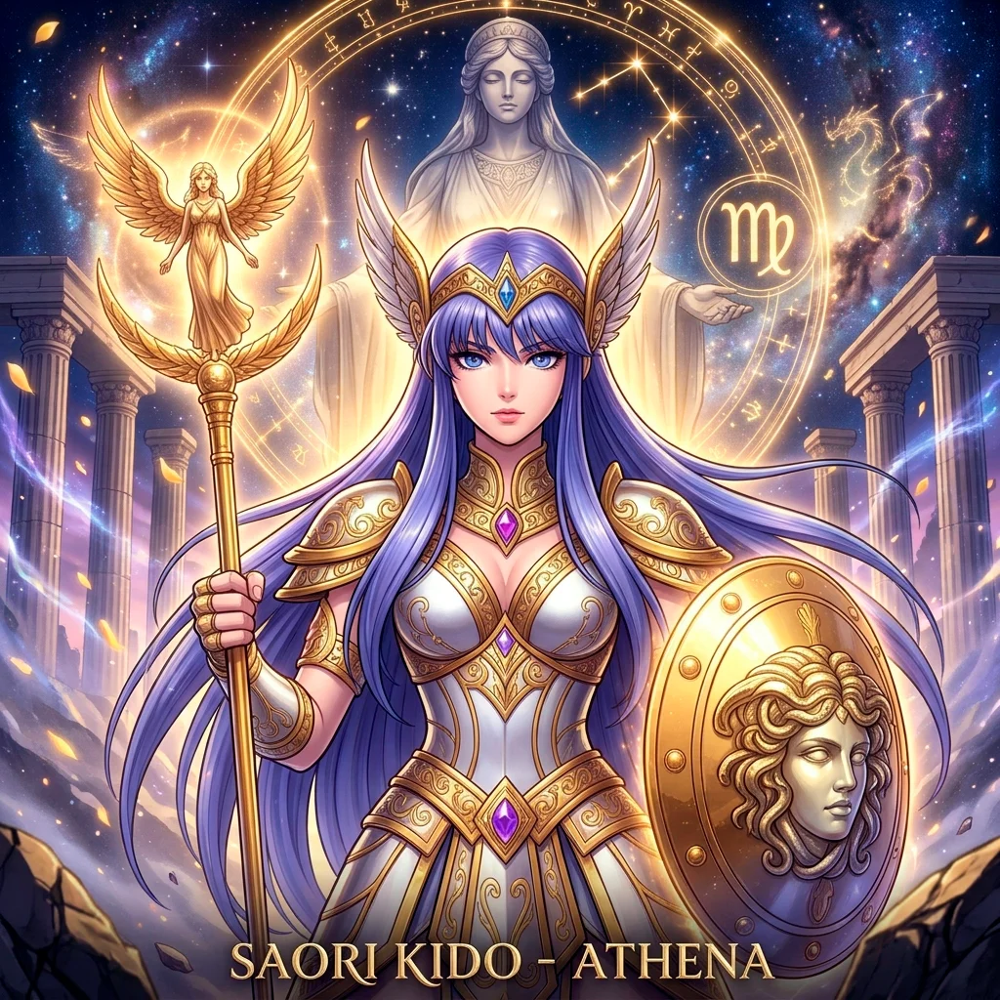
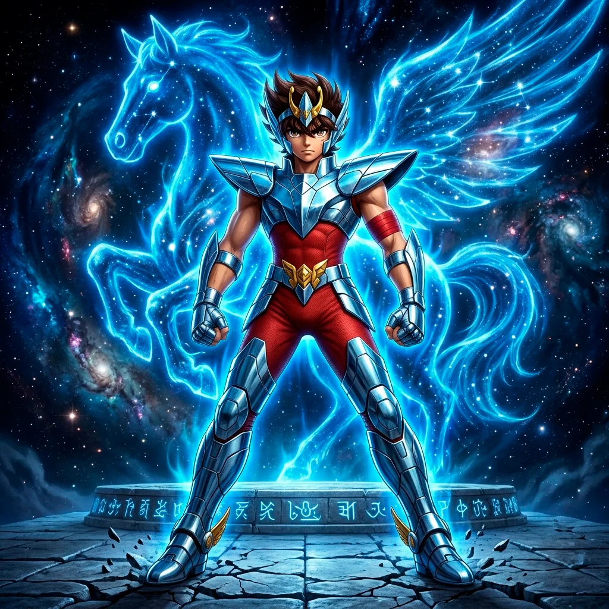
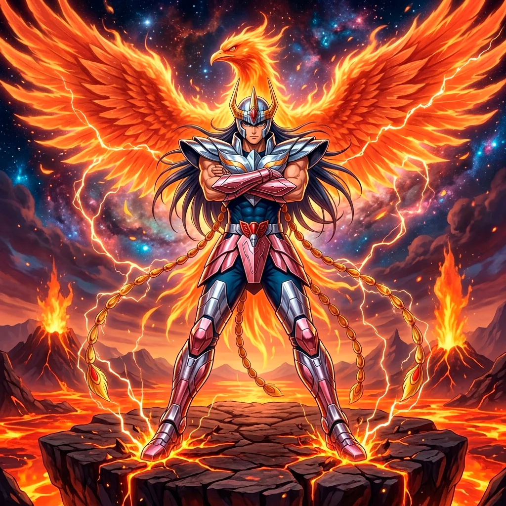
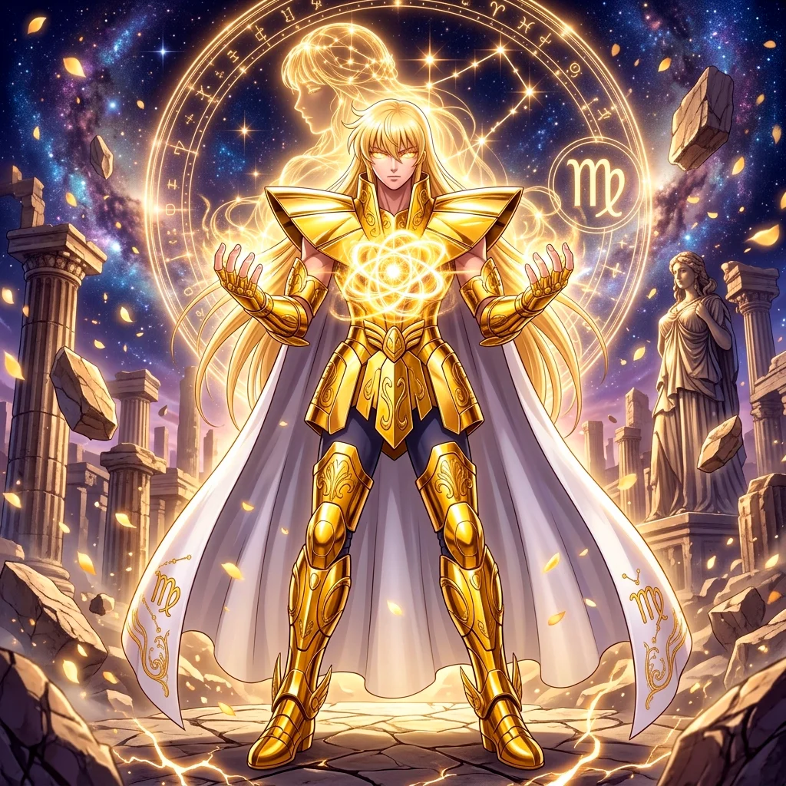

Investiga el mundo de los Caballeros

Es la diosa griega de la sabiduría y la estrategia militar. Actúa como la protectora suprema de la Tierra reencarnando
cada 243 años como mortal —representada en la era moderna por Saori Kido— para liderar la defensa del planeta frente a
amenazas divinas como Hades o Poseidón.
Ante ella, los Caballeros conforman su ejército sagrado de máxima lealtad,
juramentados a protegerla con sus vidas y portar las armaduras de las constelaciones para servir como su escudo y espada
en batallas
Personajes destacados
SEIYA

IKKI

SHAKA
